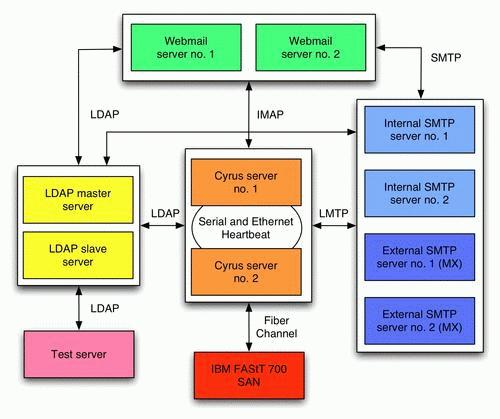
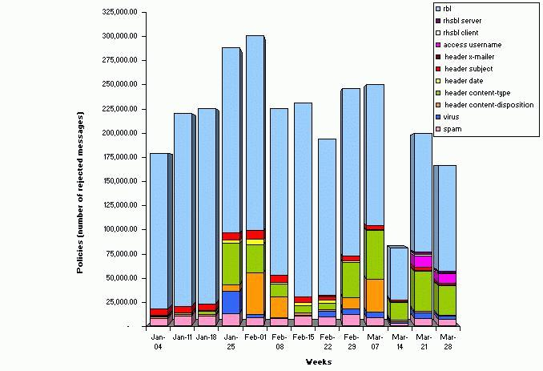
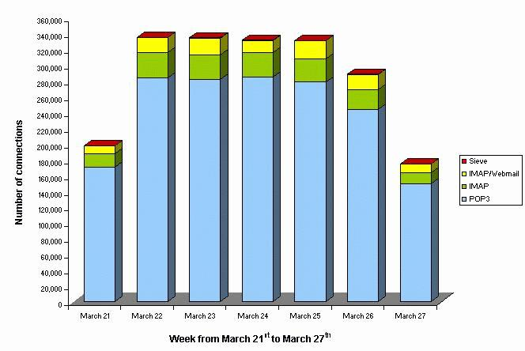
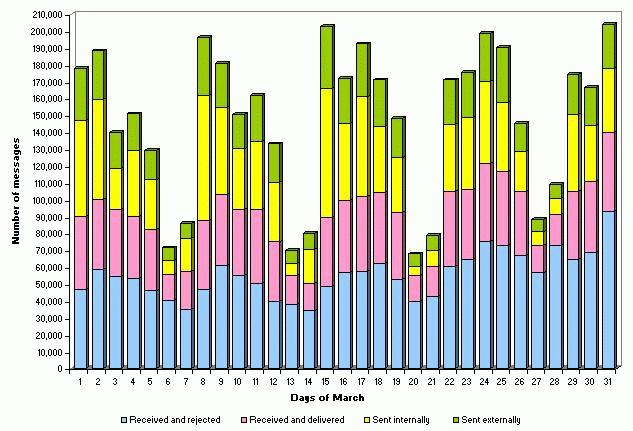

<!DOCTYPE HTML PUBLIC "-//W3C//DTD HTML 4.01 Transitional//EN"><html><head><title>HEC Montréal: Follow-up on the Large-Scale Mail Installation</title>

<meta http-equiv="Content-Type" content="text/html; charset=ISO-8859-1">
<meta name="AUTHOR" content="Linux Journal  - The Premier Magazine of the Linux Community">
<meta name="COPYRIGHT" content="Copyright (c) 2002 by Linux Journal  - The Premier Magazine of the Linux Community">
<meta name="KEYWORDS" content="linux, linux journal, magazine">
<meta name="DESCRIPTION" content="The Monthly Magazine of the Linux Community">
<meta name="GOOGLEBOT" content="NOARCHIVE">
<meta name="GENERATOR" content="PHP-Nuke 5.0 - http://phpnuke.org">


<link rel="StyleSheet" href="linux-journal-20040413_files/style.css" type="text/css">


<script type="text/javascript">
<!--
function showimage() {
if (!document.images)
return
document.images.avatar.src=
'http://www.linuxjournal.com/images/forum/avatar/' + document.Register.user_avatar.options[document.Register.user_avatar.selectedIndex].value
}
//-->
</script>

<script type="text/javascript">
<!--
function openwindow(){
        window.open ("","Help","toolbar=no,location=no,directories=no,status=no,scrollbars=yes,resizable=no,copyhistory=no,width=600,height=400");
}
//-->
</script></head>

<body bgcolor="#505050" text="#000000" link="#363636" vlink="#363636" alink="#d5ae83">
<table><tbody><tr><td>
<script type="text/javascript">
<!--
   if (!document.phpAds_used) document.phpAds_used = ',';
   phpAds_random = new String (Math.random()); phpAds_random = phpAds_random.substring(2,11);
   document.write ("<center><" + "script language='JavaScript' type='text/javascript' src='");
   document.write ("http://www.ssc.com/adserver/adjs.php?n=" + phpAds_random);
   document.write ("&amp;what=zone:1");
   document.write ("&amp;exclude=" + document.phpAds_used);
   if (document.referer)
      document.write ("&amp;referer=" + escape(document.referer));
   document.write ("'></center><" + "/script>");
//-->
<center><a href="http://www.ssc.com/adserver/adclick.php?n=afcb8415"
target="_blank"></a> </center> <br>
<table cellpadding="0" cellspacing="0" width="100%" border="0" align="center" bgcolor="#ffffff">
<tbody><tr>
<td bgcolor="#ffffff">

<a href="http://www.linuxjournal.com/index.php"></a></td>
<td bgcolor="#999999"></td>
<td bgcolor="#cfcfbb" align="center">
<center><form action="search.php" method="post"><font class="content" color="#000000"><b>Search </b>
<input type="text" name="query" size="14"></font></form></center></td>
<td bgcolor="#cfcfbb" align="center">
<center><form action="search.php" method="get"><font class="content"><b>Topics </b>
<select name="topic" onchange="submit()"><option value="">All Topics</option><option value="11">Book Reviews</option><option value="6">Development Tools</option><option value="36">Embedded</option><option value="17">Games</option><option value="34">German</option><option value="30">Hardware</option><option value="12">Linux Community</option><option value="9">Linux in Business</option><option value="7">Linux in Education</option><option value="29">Linux Journal</option><option value="4">Linux Kernel</option><option value="21">Linux Market</option><option value="1">Miscellaneous</option><option value="13">Multimedia</option><option value="5">Networking</option><option value="31">Other Software</option><option value="32">Product of the Day</option><option value="19">Product Reviews</option><option value="8">Security</option><option value="33">Spanish</option><option value="35">Tutorial</option><option value="28">Web Development</option></select></font></form></center></td>
<td bgcolor="#cfcfbb" valign="top"></td>
</tr></tbody></table>
<table cellpadding="0" cellspacing="0" width="100%" border="0" align="center" bgcolor="#fefefe">
<tbody><tr>
<td bgcolor="#000000" colspan="4"></td>
</tr>
<tr valign="middle" bgcolor="#dedebb">
<td width="15%" nowrap=""><font class="content" color="#363636"><b>
<!-- BEGIN user customization -->  <b><font color="#363636"><a href="http://www.linuxjournal.com/user.php">Create</a></font> an account</b>
<!-- END user customization --></b></font></td>
<td align="center" height="20" width="70%"><font class="content"><b>
<a href="http://www.linuxjournal.com/">Home</a>
 · 
<a href="http://www.linuxjournal.com/subscribe.php">Subscribe</a>
 · 
<a href="http://www.linuxjournal.com/topics.php">Topics</a>
 · 
<a href="http://www.linuxjournal.com/advertising.php">Advertise</a>
 · 
<a href="http://pr.linuxjournal.com/" target="_blank">Vendor Press</a>
</b></font>

</td>
<td> </td>
</tr>
<tr>
<td bgcolor="#000000" colspan="4"></td>
</tr>
</tbody></table>
<!-- FIN DEL TITULO -->
<table width="100%" cellpadding="0" cellspacing="0" border="0" bgcolor="#ffffff" align="center"><tbody><tr valign="top">
<td bgcolor="#ffffff"></td></tr></tbody></table>
<table width="100%" cellpadding="0" cellspacing="0" border="0" bgcolor="#ffffff" align="center"><tbody><tr valign="top">
<td bgcolor="#ffffff"></td>
<td bgcolor="#ffffff" width="150" valign="top">
<table border="0" cellpadding="1" cellspacing="0" bgcolor="#000000" width="150"><tbody><tr><td>
<table border="0" cellpadding="3" cellspacing="0" bgcolor="#dedebb" width="100%"><tbody><tr><td align="left">
<font class="content" color="#363636"><b>Linux Journal</b></font>
</td></tr></tbody></table></td></tr></tbody></table>
<table border="0" cellpadding="0" cellspacing="0" bgcolor="#ffffff" width="150">
<tbody><tr valign="top"><td bgcolor="#ffffff">
<font class="content"><strong><big>·</big></strong>
  <a href="http://www.linuxjournal.com/index.php">Home</a><br>
 
<strong><big>·</big></strong>
  <a href="http://www.linuxjournal.com/modules.php?op=modload&amp;name=NS-subscribe&amp;file=suboptions#new">
     Subscribe</a> / 
  <a href="http://www.linuxjournal.com/modules.php?op=modload&amp;name=NS-subscribe&amp;file=suboptions#renew">
     Renew</a><br>
<strong><big>·</big></strong>
  <a href="http://www.linuxjournal.com/modules.php?op=modload&amp;name=NS-subscribe&amp;file=suboptions#address">
     Change Address</a><br>
<strong><big>·</big></strong>
   <a href="http://www.linuxjournal.com/subscribe.php">Subscriber Services</a><br></font><p>
<font class="content"><strong><big>·</big></strong>
   <a href="http://www.linuxjournal.com/PdfSubQues.php">Download a Sample</a><br>
   <a href="http://www.linuxjournal.com/PdfSubQues.php">Issue</a>
</font></p><p>
<font class="content"><strong><big>·</big></strong>
   <a href="http://www.linuxjournal.com/advertising.php">Advertise</a><br> 
<strong><big>·</big></strong>
   <a href="http://www.linuxjournal.com/modules.php?op=modload&amp;name=NS-author&amp;file=wanted">
      Write for Us</a><br>
<strong><big>·</big></strong>
   <a href="http://www.linuxjournal.com/press.php">Press Releases</a><br> 
<strong><big>·</big></strong>
   <a href="http://www.linuxjournal.com/contact.php">Contact Us</a><br>
</font></p><p>
<font class="content"><strong><big>·</big></strong>
   <a href="http://www.geekcruises.com/home/ll4_home.html">
       Linux Lunacy Cruise</a><br>
<strong><big>·</big></strong>
   <a href="http://www.linuxjournal.com/ljpress">LJ Press Books</a><br>
<strong><big>·</big></strong>
   <a href="http://www.linuxjournal.com/modules.php?op=modload&amp;name=NS-FAQ&amp;file=index">
       FAQ</a><br></font>
</p></td></tr></tbody></table>
<br>


<table border="0" cellpadding="1" cellspacing="0" bgcolor="#000000" width="150"><tbody><tr><td>
<table border="0" cellpadding="3" cellspacing="0" bgcolor="#dedebb" width="100%"><tbody><tr><td align="left">
<font class="content" color="#363636"><b>Subscribe (USA)</b></font>
</td></tr></tbody></table></td></tr></tbody></table>
<table border="0" cellpadding="0" cellspacing="0" bgcolor="#ffffff" width="150">
<tbody><tr valign="top"><td bgcolor="#ffffff">
<form method="post" action="https://www.ssc.com/cgi-bin/lj/USA.py">

<table cellspacing="0" cellpadding="0">
<tbody><tr>
   <td align="right">
     <font face="arial, helvetica, sans-serif" size="-2">Name </font>
   </td>
   <td align="left">
      <font face="arial, helvetica, sans-serif" size="-2">
      <input type="text" size="10" name="name" maxlength="32">
      </font>
    </td>
 </tr>
 <tr>
    <td align="right">
      <font face="arial, helvetica, sans-serif" size="-2">Addr </font>
    </td> 
    <td align="left">
      <font face="arial, helvetica, sans-serif" size="-2">
      <input type="text" size="10" name="addr1" maxlength="32">
      </font>
    </td>
 </tr>
 <tr>
     <td align="right">
        <font face="arial, helvetica, sans-serif" size="-2">Addr </font>
     </td>
     <td align="left">
	<font face="arial, helvetica, sans-serif" size="-2">
	 <input type="text" size="10" name="addr2" maxlength="32">
         </font>
     </td>
 </tr>
 <tr>
    <td align="right">
       <font face="arial, helvetica, sans-serif" size="-2">City </font>
    </td>
    <td align="left">
        <font face="arial, helvetica, sans-serif" size="-2">
	<input type="text" size="10" name="city" maxlength="17">
        </font>
     </td> 
 </tr>
 <tr>
     <td align="right">
        <font face="arial, helvetica, sans-serif" size="-2">State </font>
      </td>
      <td align="left">
        <font face="arial, helvetica, sans-serif" size="-2">
        <input type="text" size="3" name="state" maxlength="2"> 
     </font></td>
</tr><tr>
</tr>
     <tr><td align="right">
        <font face="arial, helvetica, sans-serif" size="-2">Zip </font>
     </td>
     <td align="left">
	<font face="arial, helvetica, sans-serif" size="-2">
        <input type="text" size="6" name="zip" maxlength="10">
        </font>
      </td>
 </tr>
 <tr>
      <td align="right">
        <font face="arial, helvetica, sans-serif" size="-2">Email </font>
      </td> 
      <td align="left">
        <font face="arial, helvetica, sans-serif" size="-2">
	<input type="text" size="10" name="email" maxlength="60">
      </font></td>
 </tr> 
</tbody></table>
<table>
<tbody><tr>
    <td valign="middle" width="80%" nowrap="1">
      <font face="arial, helvetica, sans-serif" size="-2">
          </font><div><font face="arial, helvetica, sans-serif" size="-2"><input type="radio" name="term" value="1yr" checked="checked">
                12 issues for $25
          </font></div>
<font face="arial, helvetica, sans-serif" size="-2">          </font><div><font face="arial, helvetica, sans-serif" size="-2"><input type="radio" name="term" value="2yr">
                24 issues for $45
          </font></div>
<font face="arial, helvetica, sans-serif" size="-2">       </font></td>
</tr>
<tr>
     <td align="center">
        <input type="submit" value="Subscribe">
        <p align="center">
        <font face="arial, helvetica, sans-serif" size="-2">
        Click below for:<br>
        <a href="https://www.ssc.com/lj/subs/NewCanada.html">Canada</a> *
        <a href="https://www.ssc.com/lj/subs/NewMexico.html">Mexico</a> *
        <a href="https://www.ssc.com/lj/subs/NewOther.html">Other</a>
        </font>
     </p></td>
</tr>
</tbody></table>
</form>
</td></tr></tbody></table>
<br>


<table border="0" cellpadding="1" cellspacing="0" bgcolor="#000000" width="150"><tbody><tr><td>
<table border="0" cellpadding="3" cellspacing="0" bgcolor="#dedebb" width="100%"><tbody><tr><td align="left">
<font class="content" color="#363636"><b>Store</b></font>
</td></tr></tbody></table></td></tr></tbody></table>
<table border="0" cellpadding="0" cellspacing="0" bgcolor="#ffffff" width="150">
<tbody><tr valign="top"><td bgcolor="#ffffff">
<strong><big>·</big></strong> <a href="http://store.linuxjournal.com/Merchant2/merchant.mv?Screen=CTGY&amp;Store_Code=LJS&amp;Category_Code=LA" target="_blank">Order Back Issues</a><br>


<strong><big>·</big></strong> <a href="http://store.linuxjournal.com/Merchant2/merchant.mv?Screen=CTGY&amp;Store_Code=LJS&amp;Category_Code=T" target="_blank">T-shirts</a><br> 


<strong><big>·</big></strong> <a href="http://store.linuxjournal.com/Merchant2/merchant.mv?Screen=CTGY&amp;Store_Code=LJS&amp;Category_Code=H" target="_blank">Hats</a><br> 

 

<strong><big>·</big></strong> <a href="http://store.linuxjournal.com/Merchant2/merchant.mv?Screen=CTGY&amp;Store_Code=LJS&amp;Category_Code=B" target="_blank">Books</a><br> 


<strong><big>·</big></strong> <a href="http://store.linuxjournal.com/" target="_blank">Fun Stuff</a><br>


<strong><big>·</big></strong> <a href="http://store.linuxjournal.com/Merchant2/merchant.mv?Screen=CTGY&amp;Store_Code=LJS&amp;Category_Code=RC" target="_blank">Reference Cards</a><br>
</td></tr></tbody></table>
<br>


<table border="0" cellpadding="1" cellspacing="0" bgcolor="#000000" width="150"><tbody><tr><td>
<table border="0" cellpadding="3" cellspacing="0" bgcolor="#dedebb" width="100%"><tbody><tr><td align="left">
<font class="content" color="#363636"><b>Other SSC Sites</b></font>
</td></tr></tbody></table></td></tr></tbody></table>
<table border="0" cellpadding="0" cellspacing="0" bgcolor="#ffffff" width="150">
<tbody><tr valign="top"><td bgcolor="#ffffff">
<strong><big>·</big></strong> <a href="http://www.linuxgazette.com/" target="_blank">Linux Gazette</a><br>

<strong><big>·</big></strong> <a href="http://pr.linuxjournal.com/" target="_blank">pr.linuxjournal.com</a><br>

<strong><big>·</big></strong> <a href="http://www.a42.com/" target="_blank">A42.com</a><br>

<strong><big>·</big></strong> <a href="http://www.ssc.com/" target="_blank">SSC Publications</a><br>
</td></tr></tbody></table>
<br>


<table border="0" cellpadding="1" cellspacing="0" bgcolor="#000000" width="150"><tbody><tr><td>
<table border="0" cellpadding="3" cellspacing="0" bgcolor="#dedebb" width="100%"><tbody><tr><td align="left">
<font class="content" color="#363636"><b>Linux Resources</b></font>
</td></tr></tbody></table></td></tr></tbody></table>
<table border="0" cellpadding="0" cellspacing="0" bgcolor="#ffffff" width="150">
<tbody><tr valign="top"><td bgcolor="#ffffff">
<strong><big>·</big></strong> <a href="http://www.linuxjournal.com/magazine.php">Magazine Archive</a><br>
<strong><big>·</big></strong> <a href="http://www.linuxjournal.com/webindex.php">Web Article Index</a><br>
<strong><big>·</big></strong> <a href="ftp://ftp.ssc.com/pub/lj/listings" target="_blank">Downloads</a><br>
<strong><big>·</big></strong> <a href="http://www.linuxjournal.com/resources.php">Linux Resources</a><br>
<strong><big>·</big></strong> <a href="http://www.linuxjournal.com/helpdesk.php">Help Desk</a><br>
<strong><big>·</big></strong> <a href="http://www.linuxjournal.com/links.php">Web Links</a><br>
<strong><big>·</big></strong> <a href="http://www.ssc.com:8080/glue/" target="_blank">User Groups (GLUE)</a><br>
<strong><big>·</big></strong> <a href="http://www.linuxjournal.com/events.php">Special Events</a><br>
<strong><big>·</big></strong> <a href="http://www.linuxjournal.com/adindex.php">Advertiser Index</a><br>
</td></tr></tbody></table>
<br>


</td><td></td><td width="100%">
<!-- END HEADER -->
<table width="100%" border="0"><tbody><tr><td valign="top">
<table border="0" cellpadding="0" cellspacing="0" bgcolor="#ffffff" width="100%"><tbody><tr><td>
<table border="0" cellpadding="1" cellspacing="0" bgcolor="#000000" width="100%"><tbody><tr><td>
<table border="0" cellpadding="3" cellspacing="0" bgcolor="#cfcfbb" width="100%"><tbody><tr><td align="left">
<font class="option" color="#363636"><b><a href="http://www.linuxjournal.com/categories.php?op=newindex&amp;catid=14">Sysadmin Corner</a>: <font color="navy">HEC Montréal: Follow-up on the Large-Scale Mail Installation</font></b></font><br>
<font class="content">Posted on Tuesday, April 13, 2004 by <a href="mailto:ludovic@inverse.ca">Ludovic Marcotte</a></font></td><td align="right"><a href="http://www.linuxjournal.com/print.php?sid=7524"></a>  <a href="http://www.linuxjournal.com/friend.php?op=FriendSend&amp;sid=7524"></a>
</td></tr></tbody></table></td></tr></tbody></table><br><a href="http://www.linuxjournal.com/search.php?query=&amp;topic=8"></a>
<font class="content" color="#000000"><i>How did HEC Montréal's new mail installation handle the spam and virus explosion of early 2004?</i><br><br></font><div class="article" lang="en"><div class="simplesect" lang="en"><div class="titlepage"><div><h2 class="title"><font class="content" color="#000000"><a name="N0x85117e0.0x85788e8"></a></font></h2></div></div><p>
<font class="content" color="#000000">The May 2004 issue of <span class="emphasis"><em>Linux Journal</em></span> features an
article that discusses the large-scale mail installation we did at HEC
   Montréal at the end of 2003. The present article describes how the
   system handled the recent e-mail worm explosion. It provides relevant
   information and statistics about the efficiency of
   unsolicited bulk email (UBE) prevention and virus protection policies
   now in place at HEC Montréal.
</font></p><p>
<font class="content" color="#000000">   HEC Montréal is Canada's first management school, founded in 1907.
   Over 11,000 students and 220 career professors are active every year.
   Furthermore, each student that graduates from HEC Montréal is provided
   with a lifelong e-mail account; over 35,500 accounts are active
   to date. As with many organizations, the e-mail infrastructure at HEC
   Montréal is a critical component that cannot perform at anything less
   than optimal functionality.
</font></p><p>
<font class="content" color="#000000">As this article explains, the new infrastructure not only
   excels in performance and stability, but it also allows HEC
Montréal
   to save money. Thus, it benefits from an accelerated return on
   investment (ROI). Emmanuel Vigne, Information Director at HEC
Montréal, put it this way:"Without the new mail infrastructure, we likely wouldn't have survived
   the recent e-mail worms crisis. We probably would have closed all
   servers in order to limit the damage. With the new infrastructure, we
   went through this crisis without issues or outages. Our network
   analysts can now focus on developing tools to manage more
   efficiently the infrastructure, as they are no longer always fixing
   issues with regard to the mail servers."
</font></p></div><div class="simplesect" lang="en"><div class="titlepage"><div><h2 class="title"><font class="content" color="#000000"><a name="N0x85117e0.0x85789f0"></a>Implemented solution</font></h2></div></div><p>
<font class="content" color="#000000">   The implemented solution was based mostly on open-source components.
A total of 11 servers, mostly  IBM xSeries, and storage array networks (SAN) are used in the new
   infrastructure. Figure 1 depicts the architecture of the implemented
   solution.
</font></p><div class="mediaobject"><font class="content" color="#000000"></font><div class="caption"><p>
<font class="content" color="#000000">Figure 1. Architecture of the Solution
</font></p></div></div><p>
<font class="content" color="#000000">   The core of the new mail infrastructure is based on components with
   industry proven track records. The components are:
</font></p><div class="itemizedlist"><ul type="disc"><li><p><font class="content" color="#000000">Postfix: A fast, easy to administer, secure and scalable mail
       transport agent.</font></p></li><li><p><font class="content" color="#000000">Cyrus IMAP Server: IMAP, POP3, Sieve services
and message storage  management.</font></p></li><li><p><font class="content" color="#000000">SquirrelMail: Complete Web mail system, slightly adapted for the
       specific needs of HEC Montréal.</font></p></li><li><p><font class="content" color="#000000">OpenLDAP: Directory services for user management, authentication
       and more.</font></p></li></ul></div><p>
<font class="content" color="#000000">   Furthermore, in order to limit the delivery of UBEs and viruses, a
   number of policies were adopted and deployed on the four SMTP servers.
   Among them, we have:
</font></p><div class="itemizedlist"><ul type="disc"><li><p><font class="content" color="#000000">Header and MIME header checks that use up-to-date
maps</font></p></li><li><p><font class="content" color="#000000">Carefully chosen real-time blackhole lists
(RBL)</font></p></li><li><p><font class="content" color="#000000">Content filtering using SpamAssassin (with some network checks
       enabled, including Vipul Razor)</font></p></li><li><p><font class="content" color="#000000">Virus scanning using NAI VirusScan</font></p></li></ul></div><p>
<font class="content" color="#000000">   To get a full description of the implemented solution, please refer to
   the May 2004 edition of <span class="emphasis"><em>Linux Journal</em></span>.
</font></p></div><div class="simplesect" lang="en"><div class="titlepage"><div><h2 class="title"><font class="content" color="#000000"><a name="N0x85117e0.0x8578f18"></a>Recent Attacks</font></h2></div></div><p>
<font class="content" color="#000000">Although UBEs continued to grow at an alarming rate, at the beginning of
2004, we also have seen of e-mail worms. Those worms
   spread themselves over the Internet as attachments to infected mail.
   The attached files are all Windows portable executable (PE) EXE files
   affecting various versions of Microsoft Windows. Table 1 describes
   some of the most popular e-mail worms we have seen in the first three
   months of 2004.
</font></p><div class="table"><font class="content" color="#000000"><a name="N0x85117e0.0x8578f9c"></a></font><p class="title"><font class="content" color="#000000"><b>Table 1. Recent Internet Worms</b></font></p><table summary="Table 1. Recent Internet Worms" border="1"><colgroup><col><col></colgroup><thead><tr><th>Worm</th><th>Description</th></tr></thead><tbody><tr><td>MyDoom.A</td><td>MyDoom.A, also known as Novarg, had the most impact at the beginning of 2004. Once it has
   infected a computer, the worm uses its own SMTP engine to send files
   (while harvesting the addresses found in those files) with the
   following extensions: asp, dbx, tbb, htm, sht, php, adb, pl, wab and
   txt. The worm also contained a backdoor function programmed to launch a
   Denial of Service (DoS) attack on 
www.sco.com on February 1st, 2004, 
   by sending HTTP GET requests every millisecond to port 80 of the
   attacked site. MyDoom.A also has two well-known modifications, 
MyDoom.B and MyDoom.E. The first one is similar to MyDoom.A, but it also
   carries out a DoS attack on www.microsoft.com and replaces the
   standard Windows host file with its own to prevent access to domains
   of anti-virus software companies. Finally, MyDoom.E
   (also called MyDoom.F) is similar to MyDoom.A; it also is 
   programmed to carry out a DoS attack on www.microsoft.com and www.riaa.com.
In addition, it searches for more file extensions in order to send
   copies of itself and randomly deletes files with  avi, bmp, doc, jpg,
   mdb, sav and xls extensions.</td></tr><tr><td>Bagle.A</td><td>Beside replicating itself with its own SMTP engine (with
   harvested e-mail addresses from various files), Bagle.A also opens a
   backdoor on port 6777 to listen for commands (allows an attacker to
   download files and execute commands on the infected computer).
Similar to its predecessor, Bagle.B opens a backdoor on port 8866.
   Bagle.C, Bagle.D and Bagle.E are mostly identical: they all open a
   backdoor on port 2745 and block anti-virus database updates by
   terminating update processes from a list of well-known vendors.
   Finally, Bagle.F is similar to Bagle.C, but it also propagates to P2P
   networks.</td></tr><tr><td>NetSky.C</td><td>Like the first two worms, NetSky.C searches for files with
   many extensions and harvests e-mail addresses from them. It then sends
   a copy of itself to these addresses--using its own SMTP engine--directly
   to the message's recipient server. If it fails, it uses a list of
   predefined SMTP servers. NetSky.D, also known as SomeFool, is similar
   to NetSky.C but is programmed to delete MyDoom from the infected
   machine.</td></tr></tbody></table></div><p>
<font class="content" color="#000000">   As you can expect, those viruses make a huge economical impact,
   calculated in terms of help desk support, overtime payments, false
   positives, bandwidth clogging, transient storage consumption,
   productivity erosion, management time reallocation and cost of
   recovery. Various industry estimates speculate that global businesses lost $55
   billion in 2003 due to viruses, up from $30 billion in
   2002 and $13 billion in 2001. Other research papers show that
   a typical user spends 4.4 seconds taking action against an e-mail.
   As an example, if we take the 25 most-spammed employees at HEC
   Montréal and set the average annual salary at $46,618 CAN, we can
   proceed with an estimate of productivity cost for the first three months
   of 2004. Table 2 shows the cost worksheet.
</font></p><div class="table"><font class="content" color="#000000"><a name="N0x85117e0.0x85792b4"></a></font><p class="title"><font class="content" color="#000000"><b>Table 2. Cost Worksheet</b></font></p><table summary="Table 2. Cost Worksheet" border="1"><colgroup><col><col></colgroup><thead><tr><th>Criteria</th><th>Value</th></tr></thead><tbody><tr><td>Number of employees</td><td>25</td></tr><tr><td>Average annual salary</td><td>$46,618 CAN</td></tr><tr><td>Number of UBEs that would have been delivered to them for
the first three months of 2004</td><td>172,887</td></tr><tr><td>Time to identify and discard each UBE</td><td>4.4 seconds</td></tr><tr><td>Total amount of time lost in the first two months of 2004
for those employees</td><td>33 days</td></tr><tr><td>Total cost for the first two months</td><td>$6,157 CAN</td></tr></tbody></table></div><p>
<font class="content" color="#000000">   Some analysts quantified the annual cost of spam at $8.9 billion for
   US corporations and $2.5 billion for European businesses in 2002. In
   2003, the numbers increased and reached $10 billion for the US and
   over a $1 billion for Canada. This tendency most likely will
continue, and some estimate that over 8.8 billion UBEs will be sent daily in 2004,
   compared to 7.3 billion in 2003 and 5.6 billion in 2002.
</font></p><p>
<font class="content" color="#000000">   "Our library director can now efficiently use his e-mail account.
   Before the new system was put in place, he was receiving hundreds of
   spam every week. Going through his e-mail during the day in order to
   respond to student requests was relatively painful and the associated
   productivity erosion was high", said Emmanuel Vigne. Nevertheless,
   although tallying the true cost of spams and viruses is relatively hard,
   HEC Montréal certainly saved money by reducing the loss of productivity
   of its employees due to UBEs and e-mail worms.
</font></p></div><div class="simplesect" lang="en"><div class="titlepage"><div><h2 class="title"><font class="content" color="#000000"><a name="N0x85117e0.0x85d3b1c"></a>Statistics</font></h2></div></div><p>
<font class="content" color="#000000">   In order to produce valuable statistics, two tools were used: Spamity
   and pflogsumm. The former is a complete solution for extracting
   information from log files of a mail infrastructure based on Postfix
   and AMaViS. Spamity extracts all the relevant information and stores
   it in a database. A Web frontend is offered so users simply can log
in to the Web application to see the
   mail rejected by the filtering policies. The nature of Spamity makes it a valuable tool
   to examine the spam and virus tendencies in order to tune the infrastructure over time to limit the delivery of UBEs and
   viruses. Spamity efficiently gathers the information related to the
   rejected messages and classifies it with regard to the following
   policies:
</font></p><div class="itemizedlist"><ul type="disc"><li><p><font class="content" color="#000000">RBL: Message rejected by a real-time blackhole
list.</font></p></li><li><p><font class="content" color="#000000">RHSBL Client: Message rejected by a right-hand side
block list.</font></p></li><li><p><font class="content" color="#000000">Header Date: Message has a date from the distant past
or future.</font></p></li><li><p><font class="content" color="#000000">Header Subject: Message rejected by suspicious
subject.</font></p></li><li><p><font class="content" color="#000000">Header X-Mailer: Message rejected by suspicious
mail user agent.</font></p></li><li><p><font class="content" color="#000000">Header Content-Disposition: Message rejected by suspicious
       attachment.</font></p></li><li><p><font class="content" color="#000000">Header Content-Type: Message rejected by suspicious attached file.
       The filter method specifies the file extension.</font></p></li><li><p><font class="content" color="#000000">Body: Message rejected by suspicious body
content.</font></p></li><li><p><font class="content" color="#000000">Access Username: Message rejected by access
username.</font></p></li><li><p><font class="content" color="#000000">Virus: Message rejected by AMaViS together with the anti-virus
       solution used.</font></p></li><li><p><font class="content" color="#000000">Spam: Message rejected by AMaViS together with
SpamAssassin.</font></p></li></ul></div><p>
<font class="content" color="#000000">   On the other hand, pflogsumm is a useful tool for providing a quick 
   overview of Postfix activity. This allows an administrator to
identify rapidly potential problems in a Postfix installation. Among the
   information reported by pflogsumm, we have:
  </font></p><div class="itemizedlist"><ul type="disc"><li><p><font class="content" color="#000000">Total number of received, delivered, forwarded, deferred, bounced
       and rejected messages</font></p></li><li><p><font class="content" color="#000000">Per-day and per-hour message traffic and
connection summaries</font></p></li><li><p><font class="content" color="#000000">Various other summaries (warnings, fatal errors, panics) and
       more.</font></p></li></ul></div><p>
<font class="content" color="#000000">   Using those two tools and some custom Perl scripts, we produced the
   different figures found in this article.
</font></p><p>
<font class="content" color="#000000">   Figure 2 shows the weekly total number of mail considered to be UBE or
   containing viruses that were blocked since the beginning of 2004. The rules' 
efficiency also is shown in this figure.
</font></p><div class="mediaobject"><font class="content" color="#000000"></font><div class="caption"><p>
<font class="content" color="#000000">Figure 2. Policies' Efficiency
</font></p></div></div><p>
<font class="content" color="#000000">   As shown in Figure 2, the RBL policy is definitively the most
   effective one, followed by content analysis using SpamAssassin and
   message Subject header analysis. You also can note that the virus
   policy numbers are not as high as expected. This is easily
   understandable as the detection of viruses  often is moved from AMaViS
   to Postfix's header checks (Content-Disposition, for example). This
   requires considerably less system resources, because we avoid both detailed
   analysis in SpamAssassin and a process fork, for each received
   message, for virus scanning using NAI VirusScan. The network analysts
   proceeded with such modifications after the 01-25 week for the MyDoom
   e-mail worm.
</font></p><p>
<font class="content" color="#000000">   Furthermore, Figure 3 shows the usage of services offered by the
   mailstore, during the busiest week of the first three months (March
   21-27).
</font></p><div class="mediaobject"><font class="content" color="#000000"></font><div class="caption"><p>
<font class="content" color="#000000">Figure 3. Services Usage
</font></p></div></div><p>
<font class="content" color="#000000">   As shown in Figure 3, POP3 is the most solicited service, followed by
   IMAP and the Web mail system, which also uses IMAP but was separated in
   the figure. During this week, peeks of 52 POP3 and 338 IMAP concurrent
   connections were observed coming from a total of 11,000 different
   users. The mailstore also is responsible for message deliveries in the
   user's mailboxes using the Local Mail Transfer Protocol (LMTP). Peaks
   of 75 concurrent delivery processes often were seen.
</font></p><p>
<font class="content" color="#000000">   On the other hand, Figure 4 shows the amount of mail exchanged using
   the four SMTP servers for the entire month of March 2004.
</font></p><div class="mediaobject"><font class="content" color="#000000"></font><div class="caption"><p>
<font class="content" color="#000000">Figure 4. SMTP Activity
</font></p></div></div><p>
<font class="content" color="#000000">   As shown in Figure 4, 40 to 60% (55,000 messages per day, on average)
   of all received mail was rejected by various UBE and virus filtering
   techniques. This number actually is down from 80% in December 2003. At
   that time, HEC Montréal was receiving more than 125,000 spams per day.
   Currently, the average number of messages sent per day is 57,000, while
   the average number of received (from external servers) and delivered
   email per day is 35,000.
</font></p><p>
<font class="content" color="#000000">   As you have seen from the different figures, the mail infrastructure
   certainly is a key component at HEC Montréal, as it is highly
   solicited. Overall, the mail infrastructure has been very fast and
   stable since it was deployed. Minor updates were performed by network
   analysts, mainly to keep up with the new e-mail worms.
</font></p></div><div class="simplesect" lang="en"><div class="titlepage"><div><h2 class="title"><font class="content" color="#000000"><a name="N0x85117e0.0x85d44e8"></a>Conclusion</font></h2></div></div><p>
<font class="content" color="#000000">   The new mail infrastructure helped HEC
   Montréal manage the e-mail worm crisis we all went through at the
   beginning of 2004. It also continues to efficiently limit the delivery
   of UBEs. According to the Call Center Team, "We have noticed an important decrease in calls regarding problems
   with the mail infrastructure, spams or viruses. This is especially
   true for computer viruses, as we are offering first level support if
   they get infected. On the other hand, some are actually calling to be
   sure we haven't blocked legitimate e-mail. Pushing forward the use of
   Spamity to users likely will help us in reducing the number of calls.
   Finally, some users also called to praise the speed, the stability and
   the efficiency of the new infrastructure."
</font></p><p>
<font class="content" color="#000000">   I would like to give special thanks to Dominique Duc for
   helping me with the various charts in this article and Chris B. Vetter
   for reviewing the content.
</font></p></div><div class="simplesect" lang="en"><div class="titlepage"><div><h2 class="title"><font class="content" color="#000000"><a name="N0x85117e0.0x85d4598"></a>Resources</font></h2></div></div><p>
<font class="content" color="#000000"><a href="http://www.collaboration-world.com/spamity/" target="_blank">Spamity</a>
</font></p><p>
<font class="content" color="#000000"><a href="http://jimsun.linxnet.com/postfix_contrib.html" target="_blank">pflogsumm</a>
</font></p><p>
<font class="content" color="#000000"><a href="http://www.viruslist.com/" target="_blank">Kaspersky Virus List</a>
</font></p></div></div>
<p><font class="content" color="#000000">Ludovic Marcotte (<a href="mailto:ludovic@inverse.ca">ludovic@inverse.ca</a>) holds a Bachelor degree
in Computer Science from the University of Montréal. He currently is a software 
architect for Inverse Inc., an IT consulting company located in downtown
Montréal.

</font></p><font class="content" color="#000000"><br><br></font><center><font class="content" color="#000000"><a href="https://www.ssc.com/lj/subs/NewUSA.html"></a></font></center>
</td></tr></tbody></table><br>


</td></tr></tbody></table>


<!-- COMMENTS NAVIGATION BAR START -->


<a name="comments"></a>
<table width="99%" border="0" cellspacing="0" cellpadding="0">
<tbody><tr><td bgcolor="#cfcfbb" align="center"><font class="content" color="#000000">"HEC Montréal: Follow-up on the Large-Scale Mail Installation" | <a href="http://www.linuxjournal.com/user.php"><font color="#000000">Login/Create an Account</font></a> | <b>2</b> comments</font></td></tr>
<tr><td bgcolor="#efefef" align="center" width="100%">
<table border="0"><tbody><tr><td><font class="content">
<form method="get" action="article.php">
<font color="#000000">Threshold</font> <select name="thold"><option value="-1">-1</option><option value="0" selected="">0</option><option value="1">1</option><option value="2">2</option><option value="3">3</option><option value="4">4</option><option value="5">5</option></select> <select name="mode"><option value="nocomments">No Comments</option><option value="nested">Nested</option><option value="flat">Flat</option><option value="thread" selected="">Thread</option></select> <select name="order"><option value="0" selected="">Oldest First</option><option value="1">Newest First</option><option value="2">Highest Scores First</option></select>
<input type="hidden" name="sid" value="7524">
<input type="submit" value="Refresh"></form>
</font></td><td bgcolor="#efefef"><font class="content"><form action="comments.php" method="post"><input type="hidden" name="pid" value=""><input type="hidden" name="sid" value="7524"><input type="hidden" name="op" value="Reply">  <input type="submit" value="Post Comment"></form></font></td></tr></tbody></table>
</td></tr><tr><td bgcolor="#cfcfbb" align="center"><font class="tiny">The comments are owned by the poster. We aren't responsible for their content.</font></td></tr>
</tbody></table>

<!-- COMMENTS NAVIGATION BAR END -->

<a name="11544"></a><table width="99%" border="0"><tbody><tr bgcolor="#efefef"><td width="500"><b>IMAP usage</b> <font class="content">(Score: 0)<br>by Anonymous on Wednesday, April 14, 2004</font></td></tr><tr><td>If
their services are anything like ours, their graph of service utilization
doesn't clearly represent the real use of their IMAP services. A POP3 user
will typically poll the server regularly, causing a connection to be logged
each and every time, where it's not uncommon for IMAP users to remain connected
throughout the day, showing only one connection initated.<br>
<br> For IMAP utilization, it is usually more interesting to look at the
number of concurrent POP and IMAP connections, as this often more closely
reflects the real load on the server.<br>
<br>
Of course, I could also be entirely wrong about how they're graphing their results.</td></tr></tbody></table><br><br><font class="content"> [ <a href="http://www.linuxjournal.com/comments.php?op=Reply&amp;pid=11544&amp;sid=7524&amp;mode=&amp;order=&amp;thold=">Reply to This</a> ]</font><br><br><ul><li><font class="content" color="#000000"><a href="http://www.linuxjournal.com/comments.php?op=showreply&amp;tid=11549&amp;sid=7524&amp;pid=11544&amp;mode=&amp;order=&amp;thold=#11549">Re: IMAP usage</a> by Anonymous on Wednesday, April 14, 2004</font><br></li></ul><!-- Finished article caching (or not caching). --></td><td bgcolor="#ffffff">
</td></tr></tbody></table>
<table width="100%" cellpadding="0" cellspacing="0" border="0" bgcolor="#ffffff" align="center"><tbody><tr valign="top">
<td align="center" height="17">


</td></tr></tbody></table>
<br><table width="100%" cellpadding="0" cellspacing="0" border="0" bgcolor="#ffffff" align="center"><tbody><tr valign="top">
<td></td>
<td width="100%"> </td>
<td></td>
</tr><tr align="center">
<td width="100%" colspan="3">
<!-- BEGIN FOOTER -->
    <center><font class="tiny">

    <a href="http://www.ssc.com/" target="blank"></a> <br>

    © 1994-2004 Specialized Systems Consultants, Inc. (SSC) publishers of <i>Linux Journal</i>. <br>

    </font><center><font class="tiny"> <a href="http://www.ssc.com/ssc/privacy.html">Privacy Statement</a> <br>

    Syndicated news file: <a href="http://www.linuxjournal.com/news.rss">news.rss</a><br>Powered by <a href="http://phpnuke.org/" target="_blank">PHP-Nuke</a> <br>

    </font>
    </center></center></td>
</tr><tr>
<td></td>
<td width="100%"> </td>
<td></td>
</tr></tbody></table>
</center></td></tr></tbody></table>

    </body></html>
